ANSYS APDL 중간고사 참고자료 (시험장용)
수업 스크립트 + 강의자료 + ANSYS Help(Mechanical APDL Command/Element Reference) 정리. 모든 스크립트는 최신 요소(LINK180 / BEAM188 / PLANE182) 기준.
!뒤는 주석.
수업 txt 표기 (이 사이트의 모든 스크립트에 적용)
레포의 수업 txt 파일(9/30~10/21, 1001·1006·1013, 중간고사 대비·풀이)에 쓰인 표기를 우선한다. 오른쪽은 같은 뜻의 정식 이름.
| 수업 표기 | 같은 뜻 | 메모 |
|---|---|---|
mp,nuxy,1,0.3 | mp,prxy | 등방성 재료는 값이 같다. 둘 중 하나만 |
prrfor | prrsol | 반력 출력 |
prnsol,u,sum / prnsol,rot,sum | prnsol,u,comp | 실제 MAPDL에서도 UX UY UZ USUM 전부 출력 |
et,1,beam188,,,3 | et,1,beam188 + keyopt,1,3,3 | KEYOPT(3)=3 (3차) |
etable,axforce,smisc,1 · etable,axstress,ls,1 | (이름은 자유) | pretab,axstress,axforce · pletab,axstress |
pcir · rect · wpoff · secn · secoff | PCIRC · RECTNG · WPOFFS · SECNUM · SECOFFSET | 4글자 이상 줄임은 ANSYS가 알아듣는다 |
esize,,n | NDIV = n 등분 | esize,크기는 요소 길이 |
finish → /solu → solve → finish → /post1 | 처리기 바꿀 때마다 finish |
⚠
1013.txt의latt,,,,3은 쉼표가 4개라 3이 비어 있는 4번째 칸(--)에 들어가 무시된다. 방향 키포인트 KB는 5번째 칸이므로 최신 수업 스크립트처럼latt,,,,,4(쉼표 5개)로 쓴다. 연습기는 4개로 쓰면 NOTE로 알려 준다.
0. 기본 틀 (모든 문제 공통)
/prep7 ! 전처리기(모델링) 시작
/title,문제이름 ! 제목 지정
! 1) 요소 · 단면 · 재료
et,1,beam188,,,3 ! 요소 타입 1 = BEAM188 (3D 보), KEYOPT(3)=3 3차 형상함수 — 또는 link180 / plane182
sectype,1,beam,i ! 단면 1 정의: 보, I형 — 단면 형태
secdata,... ! 단면 치수 (sectype 종류마다 순서가 다름)
mp,ex,1,30e6 ! 재료 1: 탄성계수 E = 30e6
mp,nuxy,1,0.3 ! 재료 1: 포아송비 ν = 0.3
! 2) 형상: (top-down) k → l → esize → lmesh 또는 (bottom-up) n → e
! 3) 경계조건 · 하중 (d / f / sfbeam)
finish ! 현재 처리기 종료
/solu ! 솔루션(해석) 처리기 시작
solve ! 해석 실행 → [K]{u} = {F} 풀기
finish ! 현재 처리기 종료
/post1 ! 일반 후처리기 시작
set,last ! 결과 읽기 (last 하중 단계)
prnsol,u,sum ! 절점 변위 출력 (UX, UY, UZ, USUM) — 절점 변위 (X, Y, Z, SUM 한 번에)
prnsol,rot,sum ! 절점 회전각 출력 [rad] (ROTX, ROTY, ROTZ) — 회전
prrfor ! 반력 출력 (평형 검증: 반력 합 = 하중) — 반력 (= prrsol)
- 단위는 ANSYS가 정하지 않는다 → 입력을 한 단위계로 통일 (in-lb-psi / m-N-Pa).
- 기본 attribute =
type,1mat,1real,1secn,1. 여러 개면 메쉬·요소 생성 전에 바꿔 준다. - 확인용:
/eshape,1+eplot(보를 단면 모양으로 보기)
1. 요소 요약
| 요소 | 노드 | 자유도 | 단면 입력 | 주요 KEYOPT | 옛 요소 |
|---|---|---|---|---|---|
| LINK180 (3D 봉/트러스) | I, J | UX UY UZ | sectype,1,link + secdata,A |
— | LINK1(2D), LINK8(3D): r,1,A |
| BEAM188 (3D 보) | I, J, (K 방향노드) | UX UY UZ ROTX ROTY ROTZ (+warping) | sectype,1,beam,종류 + secdata |
KEYOPT(3): 0 선형, 2 2차, 3 3차 → et,1,beam188,,,3 |
BEAM3(2D): r,1,A,I,h |
| PLANE182 (2D 4절점) | I J K L | UX UY | 보통 필요 없음 (KEYOPT(3)=0 평면응력, 단위 두께). 두께 입력(KEYOPT(3)=3)은 실상수가 필요해서 수업에서는 안 씀 | KEYOPT(3): 0 평면응력, 1 축대칭, 2 평면변형, 3 두께입력 평면응력 | PLANE42 |
| COMBIN14 (스프링) | I, J | KEYOPT(2)=1~3 → 1D UX/UY/UZ, 4~6 → 비틀림 ROTX/Y/Z | r,1,k (실상수로만 받음) |
KEYOPT(2) | 수업에서는 안 씀 → LINK180 + sectype,link, A = kL/E |
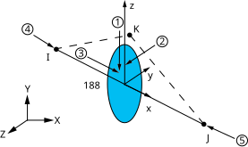
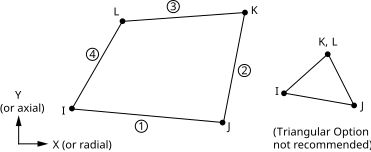
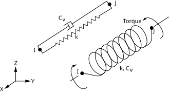
r,번호,k로만 넣는다. — ANSYS Help (Element / Command Reference)- 그림의 소문자 x, y, z = element(국부) 좌표계, 대문자 X, Y, Z = global 좌표계. 하중·구속(
d,f)은 global(또는 노드 좌표계),sfbeam·결과 SMISC는 element 좌표계 기준이다. - LINK180은 노드 2개짜리 직선 요소라 휘지 않는다 → 보처럼 하중을 받는 부재에는 BEAM188.
- PLANE182는 X-Y 평면(Z=0) 안에만 만든다. 노드 순서가 시계 방향이면 면적이 음수가 되어 오류.
옛 요소 LINK1·LINK8·BEAM3은 ANSYS 13.0(2010)부터 문서에서 빠진 요소(BEAM3은 10년 넘게 미지원), PLANE42는 archive. 족보 16~19년 풀이는 이 요소들을 쓰므로 LINK180/BEAM188/PLANE182로 바꿔 쓸 것. BEAM188은 real constant(
r)를 무시하므로 반드시sectype/secdata.수업 방식: 실상수
r은 쓰지 않고 단면은 전부sectype/secdata로 넣는다. 스프링도 COMBIN14(실상수 필요) 대신 LINK180으로 모델링한다.시험 지시가 "LINK180으로 스프링 모델링"이면 k = EA/L →
secdata,A에 A = k·L/E.
2. 단면 (SECTYPE / SECDATA)
sectype,SECID,Type,Subtype ! 단면 SECID 정의: Type — Type = beam / link
secdata,VAL1,VAL2,... ! 단면 치수 (sectype 종류마다 순서가 다름)
secoff,Location,OFFSETY,OFFSETZ ! 보 노드를 단면의 어디에 둘지 지정
secn,SECID ! 이후 만드는 요소의 단면 번호 = SECID
| Subtype | SECDATA 순서 | 예 |
|---|---|---|
link |
A | secdata,8 |
rect |
B(폭), H(높이), Nb, Nh(셀 수) | secdata,2,4 |
csolid |
R (반지름!), N(원주 분할, 기본 8), T(반경 분할, 기본 2) | secdata,1.5/2 |
ctube |
Ri, Ro | |
i |
W1(아래 플랜지 폭), W2(위 플랜지 폭), W3(전체 높이), t1(아래), t2(위) 플랜지 두께, t3(웨브 두께) | W12×26: secdata,6.49,6.49,12.22,0.380,0.380,0.230 |
chan |
W1(아래), W2(위) 플랜지 폭, W3(전체 높이), t1(아래), t2(위) 플랜지 두께, t3(웨브 두께) | C9×20: secdata,2.648,2.648,9,0.413,0.413,0.448 |
hrec (사각 중공) |
W1(바깥 폭), W2(바깥 높이), t1(왼), t2(오른), t3(아래), t4(위) 벽 두께 | secdata,6,6,0.25,0.25,0.25,0.25 |
asec (임의) |
A, Iyy, Iyz, Izz, Iw, J, CGy, CGz, SHy, SHz, TKz, TKy | secdata,7.65,17.3,,204,,0.3 |
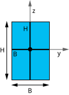
rect: B(y 방향 폭), H(z 방향 높이). 원점 = 도심. — ANSYS Help (Element / Command Reference)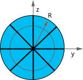
csolid: R = 반지름(지름 아님!). 원점 = 중심. — ANSYS Help (Element / Command Reference)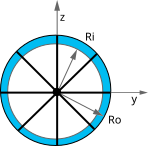
ctube: Ri(안 반지름), Ro(바깥 반지름). — ANSYS Help (Element / Command Reference)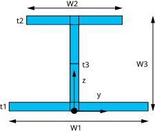
i: W1·t1 = 아래 플랜지, W2·t2 = 위 플랜지, W3 = 전체 높이(z), t3 = 웨브. 원점(검은 점) = 아래 플랜지 밑면 가운데. — ANSYS Help (Element / Command Reference)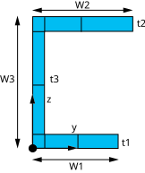
chan: I와 같은 순서. 원점 = 웨브 바깥쪽 아래 모서리. 플랜지는 +y 쪽으로 뻗는다. — ANSYS Help (Element / Command Reference)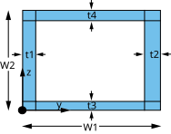
hrec(사각 관): W1 폭, W2 높이, t1~t4 벽 두께(왼·오·아래·위). 원점 = 왼쪽 아래 모서리. — ANSYS Help (Element / Command Reference)- 단면 그림의 y, z = BEAM188의 element y, z. 그래서 방향 노드 K로 element z를 위(+Y)로 세우면 I형강의 높이 W3가 세로가 된다(3장).
- 선은 셀(적분점) 분할을 나타낸다 — 입력할 필요 없음(
csolid의 N, T 같은 뒤쪽 값은 생략 가능). - I / CHAN 단면의 높이(W3)는 단면 z방향 → 강축 = Iyy (W12×26 → Iyy≈201.8, Izz≈17.3).
- ASEC는 Iyy·Izz를 직접 넣기 때문에 하중 방향과 맞춰야 함: 하중이 element −y 방향이면 강축 I를 Izz에, −z 방향이면 Iyy에.
- 단위 환산: 강재표 mm → m. A [mm²]×1e-6, I [10⁶ mm⁴]×1e-6 → m⁴ (예: W310×52 Ix=119×10⁶ mm⁴ = 119e-6 m⁴).
SECOFFSET (보 단면에서 노드 위치)
secoff,Location,OFFSETY,OFFSETZ,CG-Y,CG-Z,SH-Y,SH-Z — 가장 최근 sectype 단면에 적용 → sectype / secdata 바로 다음에 쓴다. 메쉬한 뒤에 바꿔도 그 단면을 쓰는 모든 요소에 적용된다(수업 예제).
| Location | 보 노드(선)가 놓이는 곳 |
|---|---|
cent | 도심 (기본값) |
shrc | 전단중심 (C형강은 웨브 바깥쪽에 있음) |
origin | 단면 원점 — I: 아래 플랜지 밑면 가운데, CHAN·HREC: 왼쪽 아래 모서리, RECT·CSOLID: 중심 |
user | 원점에서 (OFFSETY, OFFSETZ) 떨어진 점 — 예: secoff,user,0,12.22 = I형강(W3 = 12.22) 위 플랜지 윗면 |
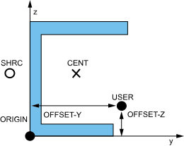
단면 형태마다 쓸 수 없는 Location이 있을 수 있다. ASEC는
secplot으로 그릴 수 없고 응력도 안 나온다.C형강은 전단중심 ≠ 도심 → 도심을 지나는 하중은 비틀림을 일으킨다. 두 단면(W와 C)을 이어 붙일 때 같은 기준점(예: 위 플랜지 면, 웹 중심)에 노드가 오도록
secoff,user,..로 맞춤 (25년 3번).
3. BEAM188 방향 — K 노드 (가장 많이 헷갈림)
한 줄 요약: K 노드는 "단면의 높이 방향"을 정하는 점이다. 보가 어느 쪽으로 서 있는지(I형강이 세워져 있는지 눕혀져 있는지)를 ANSYS에 알려 준다. 원형 단면(csolid, ctube)은 어느 쪽으로 돌려도 같으므로 K가 필요 없다.
축 정하기 — 3단계로 외우기
- x축 = I → J.
e,I,J,K에서 첫 번째 노드에서 두 번째 노드로. - z축 = 보에서 K를 향하는 쪽. K에서 보 선에 수선을 내리고, 그 발에서 K로 가는 방향이 z. 거리는 상관없고 방향만 쓴다(K가 보에서 1이든 100이든 같다). Help 원문: “I, J와 K가 element x축과 z축을 담는 평면을 만든다.”
- y축 = z × x (오른손 법칙). 외우기 쉬운 형태: 화면에서 x가 오른쪽, z가 위면 y는 화면 안쪽(⊗).
K가 바꾸는 것 세 가지
| 무엇 | 규칙 | K를 보 위(+Y)에 둔 수평 보 |
|---|---|---|
| 단면 방향 | 2장 단면 그림의 y, z = element y, z. I·CHAN·RECT의 높이(W3, H)는 z 방향 | 높이가 세로 → 연직 하중을 강축으로 받음 |
sfbeam 하중 방향 | 양(+)의 PRES: face 1 = element −z, face 2 = element −y 방향으로 누름 | sfbeam,all,1,pres,w = 아래로 w |
| 결과 이름 | 모멘트·전단력도 element 축 기준 | 굽힘모멘트 MY = smisc,2 / 15, 전단력 SFZ = 5 / 18 |
K를 안 주면 (기본값)
- element y가 global X-Y 평면과 평행하게 자동으로 정해진다. 보가 +X 방향이면 y = +Y, z = +Z(화면 밖). 보가 global Z와 평행하면 y = global Y.
- 그래서 X-Y 평면 프레임에서 K를 빼면 z가 화면 밖 → I·CHAN·RECT의 높이가 옆으로 누워 약축으로 휜다. W12×26이면 변위가 약 11배(= Iyy/Izz ≈ 204/17.3) 크게 나온다. 그림 ②.
- 이때 연직 하중은 −y 방향 = face 2, 모멘트는 MZ =
smisc,3/16. - ASEC 단면은 높이 대신 Iyy, Izz를 직접 넣으므로 K 없이 쓰고, 강축 I를 Izz 자리에 넣는다(
secdata,A,Iyy,Iyz,Izz,Iw,J).
상황별 정리
| 상황 | K 위치 | 연직 하중 face | 모멘트 ETABLE |
|---|---|---|---|
| 수평 보 + I / CHAN / RECT | 보 위쪽(+Y) 아무 점 | 1 (양수 = 아래) | MY: smisc,2 / 15 |
| 수평 보 + 원형 또는 ASEC | 필요 없음 | 2 (양수 = 아래) | MZ: smisc,3 / 16 |
| 기둥 + I / CHAN (프레임 평면 안에서 휨) | 기둥 옆(±X), 프레임 평면 안 | — | MY |
| K를 반대쪽(보 아래)에 두면 | z가 아래로 | face 1 양수 = 위로 → 값에 − | MY 부호 반대 |
명령으로 쓰기
- 노드로 직접: K용 노드를 따로 만들고 요소의 세 번째 노드로 준다. 예)
n,100,0,10→e,1,2,100. K용 노드는 해석에 안 들어가므로 구속할 필요 없음(연습기는 그림에서도 숨김). - 키포인트 + LMESH: 방향용 키포인트를 만들고
latt,,,,,KB— 쉼표 5개(LATT, MAT, REAL, TYPE, --, KB). 그 뒤lmesh가 K 노드를 자동으로 만든다. (1013.txt의latt,,,,3은 쉼표가 4개라 무시됨) - KB 하나로 보와 기둥 둘 다: 수업 예제
k,4,0,109는 보(선 1)에서 보면 위쪽, 기둥(선 2)에서 보면 왼쪽(−X)이다 → 두 부재 모두 높이가 프레임 평면 안에 선다. - K가 보 선 위(연장선 포함)에 있으면 방향을 정할 수 없어 오류.
맞게 됐는지 확인
/eshape,1→eplot: 보를 실제 단면 모양으로 그린다. I형강이 서 있으면 성공.- 변위가 손계산보다 10배쯤 크면 → 약축으로 휘고 있는 것. K 위치부터 의심.
! 예: Example 4.5 프레임 (W12×26, K 노드 사용) — '중간고사 풀이.TXT'의 정석 풀이
et,1,beam188,,,3 ! 요소 타입 1 = BEAM188 (3D 보), KEYOPT(3)=3 3차 형상함수
sectype,1,beam,i ! 단면 1 정의: 보, I형
secdata,6.49,6.49,12.22,0.380,0.380,0.230 ! 아래·위 플랜지 폭 6.49, 6.49 / 높이 12.22 / 아래·위 플랜지 두께 0.380, 0.380 / 웨브 두께 0.230
mp,ex,1,30e6 ! 재료 1: 탄성계수 E = 30e6
mp,nuxy,1,0.3 ! 재료 1: 포아송비 ν = 0.3
n,1,0,108 ! 노드 1 생성: x=0, y=108 — 9 ft = 108 in
n,2,120,108 ! 노드 2 생성: x=120, y=108
n,3,120,0 ! 노드 3 생성: x=120, y=0
n,4,0,108+12.06 ! 노드 4 생성: x=0, y=108+12.06 — K: 보 1 위쪽
n,5,120+12.06,0 ! 노드 5 생성: x=120+12.06, y=0 — K: 기둥 2 오른쪽
e,1,2,4 ! 요소 생성: 노드 1 – 2, 방향 노드 K = 4
e,2,3,5 ! 요소 생성: 노드 2 – 3, 방향 노드 K = 5
d,1,all ! 노드 1 완전 고정 (모든 자유도 = 0)
d,3,all ! 노드 3 완전 고정 (모든 자유도 = 0)
sfbeam,1,1,pres,800/12 ! 요소 1, face 1 = element −z 방향에 분포하중 800/12 (등분포) — lb/ft → lb/in
4. SFBEAM (보 분포하중)
sfbeam,Elem,LKEY,PRES,VALI,VALJ,VAL2I,VAL2J,IOFFST,JOFFST,LENRAT
Elem: 요소 번호 또는all(선택된 전체)LKEY(BEAM188): 1 = element −z 방향(I-J 면), 2 = element −y 방향, 3 = 접선(+x), 4 = I 끝, 5 = J 끝VALI,VALJ: I절점, J절점 값. VALJ 생략 → VALI와 같음(등분포). 삼각/선형 분포하중 = VALI≠VALJIOFFST,JOFFST: 요소 끝에서 하중 시작/끝 위치 오프셋,LENRAT=1이면 비율(0~1). 오프셋은 KEYOPT(3)=3(3차)일 때만 사용 가능.JOFFST=-1이면 IOFFST 위치에 VALI 집중하중- 음수 값 = 반대 방향
- ⚠ 옛 요소 BEAM3는 face 1이 −Y 방향 → 옛 스크립트의
sfbeam,…,1,…(BEAM3)은 BEAM188에서는 보통 face 2(K 노드 없을 때)
삼각 분포하중 처리 (21·23·25년 매번 나옴)
- 하중이 꺾이는 점(최댓값), 지점, 결과를 볼 점에 노드가 오도록 선을 나눈다.
- 구간마다 선형이므로, 요소 하나하나에
VALI, VALJ를 그 위치의 하중값으로 준다. 요소가 많으면*do반복문 사용:
! 가운데(a)에서 최대 wmax, 양 끝(0, L)에서 0인 대칭 삼각하중 : w(x) = wmax*(1-|x-a|/a)
wmax=25000 ! 파라미터 wmax = 25000
a=3.75 ! 파라미터 a = 3.75 — 꼭짓점 위치 (= L/2)
*get,ne,elem,,count ! ne = 선택된 요소 개수
*do,i,1,ne ! 반복 시작: i = 1 ~ ne
xi=nx(nelem(i,1)) ! 파라미터 xi = nx(nelem(i,1)) — 요소 i의 I 노드 x좌표
xj=nx(nelem(i,2)) ! 파라미터 xj = nx(nelem(i,2)) — J 노드 x좌표
sfbeam,i,1,pres,wmax*(1-abs(xi-a)/a),wmax*(1-abs(xj-a)/a) ! 요소 i, face 1 = element −z 방향에 분포하중 wmax*(1-abs(xi-a)/a) → wmax*(1-abs(xj-a)/a) (선형 분포)
*enddo ! 반복 끝
⚠ APDL에는
<=같은 참/거짓 비교식이 없다.(A<B)는 둘 중 작은 값,(A>B)는 큰 값을 돌려준다. 꼭짓점이 가운데가 아니면*if,xi,le,a,then … *else … *endif로 나눈다.
face 번호는 K 노드를 위(+Y)에 둔 경우 1, K 노드 없이 element y = global Y이면 2.
손으로 쓰기 편하려면 노드를 하중 꺾이는 점·지점에만 두고(요소 3~4개), KEYOPT(3)=3(3차)으로 해도 정확도가 충분하다. 결과 비교해 보고 쓸 것.
- 분포하중 단위: lb/ft → lb/in = /12
수업 예제: I형강 프레임 + 분포하중 (LATT 방향 키포인트 · SECOFFSET · /ESHAPE)
수업 시간 메모장 스크립트(원본 txt)를 그대로 옮기고 주석을 달았다. 원본 첫 줄 sfbeam !분포하중은 메모라서 빼고, 마지막 pldisp 앞에 /post1을 넣었다.
/clear ! 데이터베이스 지우고 새로 시작
/prep7 ! 전처리기 들어가기
et,1,beam188 ! 요소 1번 = BEAM188 (3-D 보)
keyopt,1,3,3 ! KEYOPT(3)=3 → 3차 형상함수 (분포하중 정확도↑)
sectype,1,beam,i ! 단면 1번 = I형강
secdata,6.49,6.49,12.22,0.38,0.38,0.23 ! W1=6.49 W2=6.49 (플랜지 폭) W3=12.22 (높이) t1=t2=0.38 (플랜지 두께) t3=0.23 (웨브 두께) [in]
mp,ex,1,3e7 ! 탄성계수 E = 3×10^7 psi
k,1,0,108 ! 키포인트 1 (0,108) — 보 왼쪽 끝
k,2,120,108 ! 키포인트 2 (120,108) — 모서리
k,3,120,0 ! 키포인트 3 (120,0) — 기둥 아래 끝
k,4,0,109,0 ! 키포인트 4 (0,109,0) — 방향용 키포인트 (선에는 안 씀)
l,1,2 ! 선 1 = 보 (KP1→KP2)
l,2,3 ! 선 2 = 기둥 (KP2→KP3)
latt,,,,,4 ! LATT,MAT,REAL,TYPE,--,KB → KB=4 : 모든 선에 방향 키포인트 4 지정 (쉼표 5개!)
lmesh,1 ! 선 1만 메쉬 (ESIZE 없음 → 기본 DESIZE: 선당 3개 이상)
sfbeam,all,1,pres,800/12 ! 지금 있는 요소(=보) 전부, face 1(−z 방향) 등분포 800 lb/ft = 800/12 lb/in
/eshape,1 ! 보를 단면 모양(3-D)으로 그리기
lmesh,2 ! 선 2(기둥) 메쉬 — SFBEAM 뒤에 메쉬했으므로 기둥에는 하중 없음
secoff,user,0,12.22 ! SECOFFSET,USER,y=0,z=12.22 : 노드를 단면 z=12.22 쪽 면에 둠 (단면 1을 쓰는 모든 요소에 적용)
dk,1,all ! KP1 고정 (모든 자유도)
dk,3,all ! KP3 고정
/solu ! 해석 처리기
solve ! 풀기
/post1 ! 후처리기 (PLDISP 는 POST1 명령)
pldisp,1 ! 변형 형상 + 변형 전 모양
latt,,,,,4— 쉼표 5개. LATT의 4번째 칸은 비어 있는 자리(--)이고 5번째가 KB(방향 키포인트)다. 쉼표를 4개만 쓰면 4가 빈 자리로 들어가 방향이 지정되지 않는다.- BEAM188에서 K(방향점)는 element z축을 정한다. I형강 높이 W3는 단면 z 방향이므로, 보(선 1)는 z = +Y → 높이가 세로(강축 휨), 기둥(선 2)은 z ≈ −X → 높이가 프레임 평면 안. K를 안 주면 보의 높이가 Z(면 밖)로 누워 약축으로 휜다.
sfbeam,all,1,…: face 1 = element −z 방향 = 보에서는 −Y(아래).all은 그 순간 선택된 요소만 뜻하므로, 기둥을 메쉬하기 전에 쓰면 보에만 하중이 걸린다.secoff,user,0,12.22: 단면 1의 오프셋은 메쉬 뒤에 바꿔도 단면 1을 쓰는 모든 요소(보·기둥)에 적용된다. /ESHAPE 그림에서 보가 선 아래로 매달리는 모양이 된다. 주석 처리된-6.11+0.38은 다른 위치를 시험해 본 값.- 연습기 결과(Timoshenko, SECOFFSET 반영): 반력 FY = 4705 (KP1), 3295 (KP3), 합 8000 = 800/12 × 120 ✓. 오프셋을 빼면(CENT) 4505 / 3495 — 노드 위치가 바뀌면 프레임 강성 분포가 달라져 반력도 바뀐다.
5. 형상 만들기 (Solid modeling)
| 명령 | 문법 | 메모 |
|---|---|---|
| 키포인트 | k,NPT,X,Y,Z |
활성 좌표계 기준 |
| 선 | l,P1,P2,NDIV |
활성 좌표계가 원통이면 원호가 됨 → 직선은 csys,0에서 |
| 면 | a,P1,P2,... / al,L1,L2,... / al,all |
|
| 사각형 | rect,X1,X2,Y1,Y2 |
WP 기준, 양 끝 좌표 |
| 원/도넛/부채꼴 | pcir,RAD1,RAD2,THETA1,THETA2 |
항상 WP 원점 중심. RAD1·RAD2 순서 무관. pcir,1 원, pcir,0.4,1 도넛, pcir,2.6,3.67,-180,-90 1/4 |
| 합치기 | aadd,NA1,NA2,... / aadd,all |
원래 면 삭제, 새 번호 |
| 빼기 | asba,NA1,NA2,SEPO,KEEP1,KEEP2 |
NA1에서 NA2를 뺌. 기본은 둘 다 삭제되고 새 면 번호가 생김 → /pnum,area,1 aplot으로 번호 확인. 남기려면 KEEP |
| 대칭 복사 | lsymm,Ncomp,NL1,NL2,NINC |
Ncomp=X → x 좌표 부호 반전(YZ면 대칭). 활성 좌표계가 직교(local 직교 포함)여야 함 → 19년 풀이처럼 local,11,0,...로 대칭축을 옮겨서 사용 |
pcirc,RAD1,RAD2,THETA1,THETA2 — 항상 WP 원점이 중심. 위치를 바꾸려면 먼저 wpave / wpoffs. 직접 그린 개략도좌표계 / 작업평면
| 명령 | 문법 | 메모 |
|---|---|---|
| 활성 좌표계 | csys,KCN |
0 직교, 1 원통(R,θ,Z) |
| 로컬 좌표계 | local,KCN,KCS,XC,YC,ZC,THXY,THYZ,THZX |
KCN > 10. KCS 0 직교, 1 원통. 원점은 global 직교좌표. 만들면 바로 활성화됨 |
| WP 원점 이동 | wpave,X1,Y1,Z1,X2,... |
활성 좌표계 좌표로 지정(원통 csys면 R,θ). 점 여러 개면 평균 위치 |
| WP 상대 이동 | wpoff,DX,DY,DZ |
현재 WP 기준 |
| WP 원점으로 | wpave,0,0 (csys,0일 때) |
2018-2처럼 구멍마다 WP를 옮겨 쓴 뒤 되돌릴 때 |
- 각도는 degree, 하지만
sin()/cos()함수는 기본 radian (*afun,deg로 바꿀 수 있음). - 25년 2번처럼 "삼각함수 금지"면 → NROTAT / NMODIF (§7).
6. 메쉬
esize,SIZE,NDIV ! esize,0.2 (크기) / esize,,1 (선 하나당 1분할: 트러스·보)
lesize,NL1,SIZE,ANGSIZ,NDIV ! 선 NL1의 분할 지정 — 특정 선만: lesize,1,,,50
type,1 ! 이후 만드는 요소의 요소 타입 번호 = 1
mat,1 ! 이후 만드는 요소의 재료 번호 = 1
secn,1 ! 이후 만드는 요소의 단면 번호 = 1 — 메쉬 전에 속성 지정 (또는 latt / aatt)
lmesh,all ! 선 메쉬 (LINK/BEAM 요소 생성) — 선 → LINK/BEAM
amesh,all ! 면 메쉬 (PLANE 요소 생성) — 면 → PLANE
트러스(LINK)는 선 하나 = 요소 하나 (
esize,,1). 중간에 노드가 생기면 핀 절점이 생겨 불안정해진다.
7. 노드 / 요소 직접 생성 (Direct generation)
| 명령 | 문법 | 메모 |
|---|---|---|
| 노드 | n,NODE,X,Y,Z,THXY,THYZ,THZX |
활성 좌표계 기준 |
| 노드 채우기 | fill,NODE1,NODE2,NFILL |
두 노드 사이 등간격 (원통 csys면 원호를 따라) |
| 노드 복사 | ngen,ITIME,INC,NODE1,NODE2,NINC,DX,DY,DZ |
ITIME = 원본 포함 총 개수, INC = 번호 증가. DX,DY,DZ는 활성 좌표계 성분 (원통이면 dR, dθ, dZ) |
| 요소 | e,I,J,K,L (en,ID,I,J,...) |
현재 type/mat/secn 적용 |
| 요소 복사 | egen,ITIME,NINC,IEL1,IEL2,IEINC |
NINC = 노드 번호 증가량 |
| 노드 좌표계 회전 | nrotat,NODE1,NODE2,NINC |
노드 좌표계를 활성 좌표계 방향으로 회전 (이전 회전 덮어씀) |
| 노드 수정 | nmodif,NODE,X,Y,Z,THXY,THYZ,THZX |
빈칸은 기존 값 유지 → nmodif,5,,,,-60 회전만 |
f,d는 노드 좌표계 기준으로 걸린다 → 노드 좌표계를 돌리면f,5,fx,..가 기울어진 방향. 결과 출력(prnsol,prrfor)은 기본 global(RSYS,0). 단*get,..,rf,..는 노드 좌표계 기준.
2025-1 형태: local 원통좌표계 + NGEN + EGEN (PLANE182)
/prep7 ! 전처리기(모델링) 시작
et,1,plane182 ! 요소 타입 1 = PLANE182 (2D 4절점 고체)
mp,ex,1,30e6 ! 재료 1: 탄성계수 E = 30e6
mp,nuxy,1,0.3 ! 재료 1: 포아송비 ν = 0.3
local,11,1,2,2 ! 로컬 좌표계 11(원통) 원점 (2, 2) → 바로 활성화 — 원통좌표계, 원점 (2,2) ← 그림 치수에 맞출 것
n,1,6,0 ! 노드 1 생성: R=6, θ=0
n,3,9,0 ! 노드 3 생성: R=9, θ=0
fill,1,3 ! 두 노드 사이를 등간격 노드로 채우기 (노드 1~3) — node 2 (R=7.5)
ngen,7,10,1,3,1,,15 ! θ 방향 15°씩 6번 복사 → 0~90° (노드 1~3, 11~13, ..., 61~63)
e,1,2,12,11 ! 요소 생성: 노드 1 → 2 → 12 → 11 (반시계 순서)
egen,2,1,1 ! 요소 1 복사: 총 2세트, 노드 번호 +1씩 — 반지름 방향 2개
egen,6,10,1,2 ! 요소 1~2 복사: 총 6세트, 노드 번호 +10씩 — 원주 방향 6줄
csys,0 ! 활성 좌표계 = 전역 직교 (X, Y, Z)
반지름 분할 수, 원주 분할 수(각도 증분)는 그림을 세서 맞춘다. 반지름 n분할이면
fill로 n−1개,egen,n,1,1.
2025-2 형태: 경사 하중을 삼각함수 없이 (Example 3.1 발코니 트러스)
/prep7 ! 전처리기(모델링) 시작
et,1,link180 ! 요소 타입 1 = LINK180 (3D 봉·트러스, 축력만)
sectype,1,link ! 단면 1 정의: LINK (단면적만)
secdata,8 ! 단면적 A = 8
mp,ex,1,1.9e6 ! 재료 1: 탄성계수 E = 1.9e6
mp,nuxy,1,0.3 ! 재료 1: 포아송비 ν = 0.3
n,1,0,0 ! 노드 1 생성: x=0, y=0
n,2,36,0 ! 노드 2 생성: x=36, y=0
n,3,0,36 ! 노드 3 생성: x=0, y=36
n,4,36,36 ! 노드 4 생성: x=36, y=36
n,5,72,36 ! 노드 5 생성: x=72, y=36
e,1,2 ! 요소 생성: 노드 1 – 2
e,2,3 ! 요소 생성: 노드 2 – 3
e,3,4 ! 요소 생성: 노드 3 – 4
e,2,4 ! 요소 생성: 노드 2 – 4
e,2,5 ! 요소 생성: 노드 2 – 5
e,4,5 ! 요소 생성: 노드 4 – 5
d,1,all ! 노드 1 완전 고정 (모든 자유도 = 0)
d,3,all ! 노드 3 완전 고정 (모든 자유도 = 0)
d,all,uz,0 ! 모든 노드의 UZ = 0 구속 — 평면 트러스: 면외 구속
! (a) NROTAT: 노드 5 위치에 -60° 회전된 로컬 좌표계를 만들고 노드 좌표계를 그쪽으로 회전
local,11,0,72,36,0,-60 ! 로컬 좌표계 11(직교) 원점 (72, 36), XY 회전 -60° → 바로 활성화
nrotat,5 ! 노드 5의 노드 좌표계를 활성 좌표계 방향으로 회전
csys,0 ! 활성 좌표계 = 전역 직교 (X, Y, Z)
f,5,fx,1000 ! 노드 5에 집중하중 FX = 1000 (노드 좌표계 기준) — 노드 좌표계 x방향 = 수평에서 아래로 60°
! (b) NMODIF: (a) 대신
! nmodif,5,,,,-60
! f,5,fx,1000
finish ! 현재 처리기 종료
/solu ! 솔루션(해석) 처리기 시작
solve ! 해석 실행 → [K]{u} = {F} 풀기
finish ! 현재 처리기 종료
/post1 ! 일반 후처리기 시작
prnsol,u,sum ! 절점 변위 출력 (UX, UY, UZ, USUM) — 결과는 기본적으로 global(RSYS,0)
etable,axforce,smisc,1 ! 요소 표 "axforce" = SMISC 1 (축력)
etable,axstress,ls,1 ! 요소 표 "axstress" = LS 1 (축응력)
pretab,axforce,axstress ! 요소 표 값 출력 (요소별)
검증값 (파이썬 강성행렬 계산): 최대 변위 = 노드 5, |u| ≈ 0.0271 in (UX 0.00647, UY −0.0263) 축응력 [psi] (요소 = 1-2, 2-3, 3-4, 2-4, 2-5, 4-5): −216.5, 153.1, 170.8, 0, −153.1, 170.8
8. 경계조건 · 하중
| 명령 | 문법 | 예 |
|---|---|---|
| 노드 구속 | d,NODE,Lab,VALUE,VALUE2,NEND,NINC,Lab2,...,Lab6 |
d,1,all 완전고정 / d,1,ux,0,,3,2,uy → 노드 1,3의 UX, UY=0. 회전 값은 rad |
| 키포인트 구속 | dk,KPOI,Lab,VALUE,VALUE2,KEXPND,Lab2,... |
dk,1,all / dk,1,ux,0,,,uy. NEND·NINC 없음 |
| 변위 부여 | d,NODE,UY,값 |
21년 1번: 끝단 δ (δ=1 넣으면 결과가 곧 δ의 계수) |
| 집중하중 | f,NODE,Lab,VALUE,VALUE2,NEND,NINC |
f,4,fy,-500,,5 → 노드 4,5 / Lab: FX FY FZ MX MY MZ |
| 키포인트 하중 | fk,KPOI,Lab,VALUE |
|
| 보 분포하중 | sfbeam |
§4 |
- 롤러:
d,node,uy,0만. 핀:ux,uy. 고정:all. - 2D 모델을 3D 요소(BEAM188/LINK180)로 풀 때 면외 자유도도 구속 (예: 모든 노드
d,all,uz,0, 보는rotx,roty도). 안 하면 "pivot/singular" 경고. - 비틀림 모멘트:
f,node,mx,T(보가 x축 방향일 때). ft·lb → in·lb ×12.
9. 후처리
| 목적 | 명령 |
|---|---|
| 결과 읽기 | /post1 → set (마지막 결과) |
| 변형 형상 | pldisp,1 (0: 변형만, 1: 변형+원형, 2: 변형+원형 외곽) |
| 변위 등고선 | plnsol,u,sum / plnsol,u,y |
| 변위·회전 출력 | prnsol,u,sum / prnsol,rot,sum — UX UY UZ USUM(ROTX ROTY ROTZ RSUM)이 한 번에 나온다(실제 MAPDL 출력 확인). 한 성분만: prnsol,u,y |
| 반력 | prrfor (= prrsol) — 평형 검증: 반력 합 = 전체 하중 |
| 요소 결과 표 | etable,이름,ITEM,COMP → pretab,이름1,이름2 / pletab,이름 |
| 값 하나 꺼내기 | *get,u5,node,5,u,y / uy(5) 함수 |
ETABLE 항목
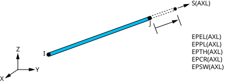
ls,1, 축력 = smisc,1. — ANSYS Help (Element / Command Reference)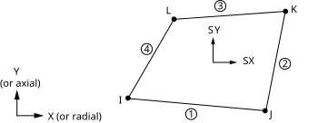
plnsol,s,x / prnsol,s,comp. — ANSYS Help (Element / Command Reference)| 요소 | 결과 | ETABLE |
|---|---|---|
| LINK180 | 축력 | etable,axforce,smisc,1 |
| LINK180 | 축응력 | etable,axstress,ls,1 |
| BEAM188 | 축력 FX (I / J) | smisc,1 / smisc,14 |
| BEAM188 | 모멘트 MY, MZ (I) | smisc,2, smisc,3 (J: 15, 16) |
| BEAM188 | 비틀림 TQ (I / J) | smisc,4 / smisc,17 |
| BEAM188 | 전단력 SFZ, SFY (I) | smisc,5, smisc,6 (J: 18, 19) |
| BEAM188 | 축응력 SDIR (I / J) | smisc,31 / smisc,36 |
| BEAM188 | 굽힘응력 SBYT, SBYB, SBZT, SBZB (I) | smisc,32~35 (J: 37~40) |
- 최대 굽힘응력 (25-3):
etable로 SMISC 32~35 네 개를 만들고pretab으로 절댓값이 가장 큰 것을 찾는다. - ASEC 단면의 굽힘응력은 믿으면 안 된다: Help — ASEC은 y·z 최대·최소를 ±0.5로 가정해서 SMISC 32~35를 계산한다(실제 단면 크기와 무관). 출력도 단면력·모멘트(일반화 응력)만 의미가 있다. 굽힘응력이 필요하면
i/chan같은 표준 단면을 쓸 것.
10. APDL 파라미터 / 함수
L=10*12 ! 파라미터 L = 120 (ft → in)
A=k*L/E ! 스프링 → LINK180 단면적 A = kL/E
*afun,deg ! sin·cos 를 degree 로 (기본은 radian)
*get,uy5,node,5,u,y ! uy5 = 노드 5의 UY
*do,i,1,10 ! 반복 시작: i = 1 ~ 10
e,i,i+1 ! 요소 i: 노드 i – i+1
*enddo ! 반복 끝
*if,xi,le,a,then ! 조건문 (삼각하중 꼭짓점이 가운데가 아닐 때)
...
*else
...
*endif
함수: sqrt() abs() sin() cos() nx(n) ny(n) nelem(e,i) ux(n) uy(n) — nx(nelem(i,1)) = 요소 i의 I 노드 x좌표 (삼각하중 반복문에서 사용)
11. 기출 유형별 스크립트
⚠️ 아래 스크립트는 기출 그림을 보고 작성한 풀이 틀이다. 그림에서 애매한 치수/위치는
!확인표시. 시험 전 반드시 ANSYS에서 돌려서 확인할 것.
2016~2025년 기출 전체 풀이(그림·검증값 포함)는 기출 풀이 페이지에 있다.
11-1. 2D 트러스 (Example 3.1) — 기본형
/prep7 ! 전처리기(모델링) 시작
et,1,link180 ! 요소 타입 1 = LINK180 (3D 봉·트러스, 축력만)
sectype,1,link ! 단면 1 정의: LINK (단면적만)
secdata,8 ! 단면적 A = 8
mp,ex,1,1.9e6 ! 재료 1: 탄성계수 E = 1.9e6
mp,nuxy,1,0.3 ! 재료 1: 포아송비 ν = 0.3
k,1,0,0 ! 키포인트 1 생성: x=0, y=0
k,2,36,0 ! 키포인트 2 생성: x=36, y=0
k,3,0,36 ! 키포인트 3 생성: x=0, y=36
k,4,36,36 ! 키포인트 4 생성: x=36, y=36
k,5,72,36 ! 키포인트 5 생성: x=72, y=36
l,1,2 ! 선 생성: 키포인트 1 – 2
l,2,3 ! 선 생성: 키포인트 2 – 3
l,3,4 ! 선 생성: 키포인트 3 – 4
l,2,4 ! 선 생성: 키포인트 2 – 4
l,2,5 ! 선 생성: 키포인트 2 – 5
l,4,5 ! 선 생성: 키포인트 4 – 5
esize,,1 ! 선 하나를 1개 요소로
lmesh,all ! 선 메쉬 (LINK/BEAM 요소 생성)
dk,1,ux,0 ! 키포인트 1의 UX = 0 구속
dk,1,uy,0 ! 키포인트 1의 UY = 0 구속
dk,3,ux,0 ! 키포인트 3의 UX = 0 구속
dk,3,uy,0 ! 키포인트 3의 UY = 0 구속
d,all,uz,0 ! 모든 노드의 UZ = 0 구속
fk,4,fy,-500 ! 키포인트 4에 집중하중 FY = -500 (노드 좌표계 기준)
fk,5,fy,-500 ! 키포인트 5에 집중하중 FY = -500 (노드 좌표계 기준)
finish ! 현재 처리기 종료
/solu ! 솔루션(해석) 처리기 시작
solve ! 해석 실행 → [K]{u} = {F} 풀기
finish ! 현재 처리기 종료
/post1 ! 일반 후처리기 시작
prnsol,u,sum ! 절점 변위 출력 (UX, UY, UZ, USUM)
etable,axforce,smisc,1 ! 요소 표 "axforce" = SMISC 1 (축력)
etable,axstress,ls,1 ! 요소 표 "axstress" = LS 1 (축응력)
pretab,axforce,axstress ! 요소 표 값 출력 (요소별)
검증값: UY4 = −0.01144 in, UY5 = −0.01952 in. 축력 [lb] (1-2, 2-3, 3-4, 2-4, 2-5, 4-5) = −1500, 1414.2, 500, −500, −707.1, 500
dk문법:dk,KPOI,Lab,VALUE,VALUE2,KEXPND,Lab2,...— 한 줄로 쓰면dk,1,ux,0,,,uy(Lab2가 KEXPND 다음 칸). 헷갈리면 수업 스크립트처럼 따로 쓰는 게 안전. 평면 트러스를 LINK180으로 풀 때 UZ 구속이 없으면 강체운동 경고가 날 수 있다(수업 스크립트는 없이도 돌아갔는지 확인).
11-2. 테이퍼/계단 봉, 변위 부여 (2021-1, 2019-2)
/prep7 ! 전처리기(모델링) 시작
et,1,link180 ! 요소 타입 1 = LINK180 (3D 봉·트러스, 축력만)
mp,ex,1,10.4e6 ! 재료 1: 탄성계수 E = 10.4e6
t=0.125 ! 파라미터 t = 0.125
*do,i,1,4 ! 반복 시작: i = 1 ~ 4 — 4구간 (2.5 in) → y=7.5 in에 노드
sectype,i,link ! 단면 i 정의: LINK (단면적만)
secdata,(2-(i-0.5)*0.25)*t ! 단면적 A = (2-(i-0.5)*0.25)*t — 구간 가운데 폭 × 두께 (폭 2→1 in, L=10)
*enddo ! 반복 끝
*do,i,1,5 ! 반복 시작: i = 1 ~ 5
n,i,0,-(i-1)*2.5 ! 노드 i 생성: x=0, y=-(i-1)*2.5
*enddo ! 반복 끝
*do,i,1,4 ! 반복 시작: i = 1 ~ 4
secn,i ! 이후 만드는 요소의 단면 번호 = i
e,i,i+1 ! 요소 생성: 노드 i – i+1
*enddo ! 반복 끝
d,1,all ! 노드 1 완전 고정 (모든 자유도 = 0)
d,all,ux,0 ! 모든 노드의 UX = 0 구속
d,all,uz,0 ! 모든 노드의 UZ = 0 구속
d,5,uy,-1 ! 노드 5에 UY = -1 변위 부여 — δ = 1 (단위) 아래로
finish ! 현재 처리기 종료
/solu ! 솔루션(해석) 처리기 시작
solve ! 해석 실행 → [K]{u} = {F} 풀기
finish ! 현재 처리기 종료
/post1 ! 일반 후처리기 시작
prnsol,u,y ! 절점 변위 출력 (Y 성분) — 노드 4 (y=7.5) 변위 = 계수 × δ
검증값: u(7.5) ≈ 0.678 δ (4요소 0.6785, 해석해 ln(2/1.25)/ln 2 = 0.6781). 요소 수를 늘릴수록 해석해에 가까워짐(8요소 0.6782).
11-3. 양단 고정 복합 축봉 (2023-1)
/prep7 ! 전처리기(모델링) 시작
et,1,link180 ! 요소 타입 1 = LINK180 (3D 봉·트러스, 축력만)
sectype,1,link ! 단면 1 정의: LINK (단면적만)
secdata,5e-4 ! 단면적 A = 5e-4 — 왼쪽 (5 cm²)
sectype,2,link ! 단면 2 정의: LINK (단면적만)
secdata,2e-4 ! 단면적 A = 2e-4 — 가운데 각 부재 (2 cm²)
sectype,3,link ! 단면 3 정의: LINK (단면적만)
secdata,5e-4 ! 단면적 A = 5e-4 — 오른쪽
mp,ex,1,69e9 ! 재료 1: 탄성계수 E = 69e9
mp,ex,2,101e9 ! 재료 2: 탄성계수 E = 101e9
mp,ex,3,73e9 ! 재료 3: 탄성계수 E = 73e9
n,1,0 ! D: 노드2(0.3 m, !확인), F: 노드4(0.5+0.15)
n,2,0.3
n,3,0.5
n,4,0.65
n,5,0.9
n,6,1.4
mat,1 ! 이후 만드는 요소의 재료 번호 = 1
secn,1 ! 이후 만드는 요소의 단면 번호 = 1
e,1,2 ! 요소 생성: 노드 1 – 2
e,2,3 ! 요소 생성: 노드 2 – 3
mat,2 ! 이후 만드는 요소의 재료 번호 = 2
secn,2 ! 이후 만드는 요소의 단면 번호 = 2
e,3,4 ! 요소 생성: 노드 3 – 4
e,4,5 ! 요소 생성: 노드 4 – 5 — 위 부재
e,3,4 ! 아래 부재 (같은 노드 사이 병렬, E=101GPa, 면적은 그림상 2 cm²로 가정 !확인)
e,4,5
mat,3 ! 이후 만드는 요소의 재료 번호 = 3
secn,3 ! 이후 만드는 요소의 단면 번호 = 3
e,5,6 ! 요소 생성: 노드 5 – 6
d,1,all ! 노드 1 완전 고정 (모든 자유도 = 0)
d,6,all ! 노드 6 완전 고정 (모든 자유도 = 0)
d,all,uy,0 ! 모든 노드의 UY = 0 구속
d,all,uz,0 ! 모든 노드의 UZ = 0 구속
f,3,fx,-20e3 ! 노드 3에 집중하중 FX = -20e3 (노드 좌표계 기준) — 20 kN, 그림의 위치·방향 !확인
finish ! 현재 처리기 종료
/solu ! 솔루션(해석) 처리기 시작
solve ! 해석 실행 → [K]{u} = {F} 풀기
finish ! 현재 처리기 종료
/post1 ! 일반 후처리기 시작
prnsol,u,x ! 절점 변위 출력 (X 성분)
etable,axforce,smisc,1 ! 요소 표 "axforce" = SMISC 1 (축력)
etable,axstress,ls,1 ! 요소 표 "axstress" = LS 1 (축응력)
pretab,axforce,axstress ! 요소 표 값 출력 (요소별)
검증값 (20 kN이 x=50 cm에서 −x 방향일 때): u_D = −0.1078 mm, u_F = −0.1513 mm, 왼쪽 축력 −12.39 kN(−24.8 MPa), 가운데 각 부재 +3.80 kN(19.0 MPa), 오른쪽 +7.61 kN(15.2 MPa).
11-4. 보 + 형강 단면 + 롤러 + 등분포 (2018-1, ASEC 방식)
/prep7 ! 전처리기(모델링) 시작
et,1,beam188,,,3 ! 요소 타입 1 = BEAM188 (3D 보), KEYOPT(3)=3 3차 형상함수
sectype,1,beam,asec ! 단면 1 정의: 보, 임의 단면(성질 직접 입력)
secdata,6650e-6,10.2e-6,,119e-6,,1e-6 ! A, Iyy, Iyz, Izz, Iw, J 순서로 단면 성질 직접 입력 — A, Iyy(약축), , Izz(강축), , J
mp,ex,1,200e9 ! 재료 1: 탄성계수 E = 200e9
mp,nuxy,1,0.3 ! 재료 1: 포아송비 ν = 0.3
n,1,0 ! 노드 1 생성: x=0
n,2,5 ! 노드 2 생성: x=5
n,3,7.5 ! 노드 3 생성: x=7.5
e,1,2 ! 요소 생성: 노드 1 – 2
e,2,3 ! 요소 생성: 노드 2 – 3
d,1,all ! 노드 1 완전 고정 (모든 자유도 = 0)
d,2,uy,0 ! 노드 2의 UY = 0 구속
d,all,uz,0 ! 모든 노드의 UZ = 0 구속
d,all,rotx,0 ! 모든 노드의 ROTX = 0 구속
d,all,roty,0 ! 모든 노드의 ROTY = 0 구속 — 면외 구속
sfbeam,all,2,pres,25000 ! face 2 = element −y = global −Y
finish ! 현재 처리기 종료
/solu ! 솔루션(해석) 처리기 시작
solve ! 해석 실행 → [K]{u} = {F} 풀기
finish ! 현재 처리기 종료
/post1 ! 일반 후처리기 시작
prnsol,u,y ! 절점 변위 출력 (Y 성분)
prnsol,rot,z ! 절점 회전각 출력 [rad] (ROTZ)
prrfor ! (b) 반력 합 FY = 25000 × 7.5 = 187,500 N 확인
I 단면(
sectype,1,beam,i, W310×52:secdata,0.167,0.167,0.317,0.0132,0.0132,0.0076)으로 하면 K 노드를 위(+Y)에 두고 face 1. (강재표: bf=167, d=317, tf=13.2, tw=7.6 mm)
11-5. 스프링 최소 k (2016-2, 2018-1c, 2023-2d)
! 위 모델에 스프링 추가 (LINK180)
et,2,link180 ! 요소 타입 2 = LINK180 (3D 봉·트러스, 축력만)
k_s=37e6 ! 파라미터 k_s = 37e6 — 시험값 → 바꿔 가며 / 또는 중첩법으로 계산
Ls=3 ! 파라미터 Ls = 3
Es=200e9 ! 파라미터 Es = 200e9
sectype,2,link ! 단면 2 정의: LINK (단면적만)
secdata,k_s*Ls/Es ! 단면적 A = k_s*Ls/Es — A = kL/E
mp,ex,2,Es ! 재료 2: 탄성계수 E = Es
n,4,5,-Ls ! 노드 4 생성: x=5, y=-Ls — 스프링 바닥
type,2 ! 이후 만드는 요소의 요소 타입 번호 = 2
mat,2 ! 이후 만드는 요소의 재료 번호 = 2
secn,2 ! 이후 만드는 요소의 단면 번호 = 2
e,2,4 ! 요소 생성: 노드 2 – 4
d,4,all ! 노드 4 완전 고정 (모든 자유도 = 0)
중첩법: δ₀(스프링 없이 하중) · f(스프링점에 단위하중) 두 번 돌려서 k 계산 → 족보 분석·공부법 §4 참고.
11-6. 삼각 분포하중 + C형강 (2023-2 / 2021-2)
/prep7 ! 전처리기(모델링) 시작
et,1,beam188,,,3 ! 요소 타입 1 = BEAM188 (3D 보), KEYOPT(3)=3 3차 형상함수
sectype,1,beam,chan ! 단면 1 정의: 보, C형(채널)
secdata,0.0805,0.0805,0.305,0.0127,0.0127,0.013 ! C310×45: bf, bf, d, tf, tf, tw (m)
mp,ex,1,200e9 ! 재료 1: 탄성계수 E = 200e9
mp,nuxy,1,0.3 ! 재료 1: 포아송비 ν = 0.3
n,1,0 ! 노드 1 생성: x=0
n,2,3.75 ! 노드 2 생성: x=3.75
n,3,5 ! 노드 3 생성: x=5
n,4,7.5 ! 노드 4 생성: x=7.5 — 하중 꼭짓점(3.75), 롤러(5), 끝(7.5)
n,10,0,1 ! K: 위쪽 → element z = global +Y (단면 높이가 세로)
e,1,2,10 ! 요소 생성: 노드 1 – 2, 방향 노드 K = 10
e,2,3,10 ! 요소 생성: 노드 2 – 3, 방향 노드 K = 10
e,3,4,10 ! 요소 생성: 노드 3 – 4, 방향 노드 K = 10
d,1,all ! 노드 1 완전 고정 (모든 자유도 = 0)
d,3,uy,0 ! 노드 3의 UY = 0 구속
d,all,uz,0 ! 모든 노드의 UZ = 0 구속
sfbeam,1,1,pres,0,25000 ! 요소 1, face 1 = element −z 방향에 분포하중 0 → 25000 (선형 분포) — face 1 = element −z = 아래
sfbeam,2,1,pres,25000,25000*(7.5-5)/(7.5-3.75) ! 요소 2, face 1 = element −z 방향에 분포하중 25000 → 25000*(7.5-5)/(7.5-3.75) (선형 분포)
sfbeam,3,1,pres,25000*(7.5-5)/(7.5-3.75),0 ! 요소 3, face 1 = element −z 방향에 분포하중 25000*(7.5-5)/(7.5-3.75) → 0 (선형 분포)
finish ! 현재 처리기 종료
/solu ! 솔루션(해석) 처리기 시작
solve ! 해석 실행 → [K]{u} = {F} 풀기
finish ! 현재 처리기 종료
/post1 ! 일반 후처리기 시작
prrfor ! (a) 반력, (b) ΣFY = ½×7.5×25000 = 93,750 N
prnsol,u,y ! 절점 변위 출력 (Y 성분) — (c) 노드 4 변위
prnsol,rot,z ! 절점 회전각 출력 [rad] (ROTZ) — (c) 노드 3(#2) 회전
요소를 더 잘게 하려면
esize+ §4의*do반복문. C형강은 전단중심이 도심과 달라 비틀림(ROTX)이 생길 수 있음 → 문제에서 묻지 않으면secoff,shrc로 전단중심에 하중이 걸리게 할지 판단(교수님 의도 확인).
11-7. 비틀림 축 (2016-1)
/prep7 ! 전처리기(모델링) 시작
et,1,beam188,,,3 ! 요소 타입 1 = BEAM188 (3D 보), KEYOPT(3)=3 3차 형상함수
sectype,1,beam,csolid ! 단면 1 정의: 보, 꽉 찬 원형
secdata,1.5/2 ! 반지름 R = 1.5/2 — 반지름!
sectype,2,beam,csolid ! 단면 2 정의: 보, 꽉 찬 원형
secdata,1/2 ! 반지름 R = 1/2
mp,ex,1,10.4e6 ! 재료 1: 탄성계수 E = 10.4e6
mp,gxy,1,3.9e6 ! 재료 1: 전단탄성계수 G = 3.9e6
mp,ex,2,10.4e6 ! 재료 2: 탄성계수 E = 10.4e6
mp,gxy,2,4.0e6 ! 재료 2: 전단탄성계수 G = 4.0e6
n,1,0 ! A, D(2.5 ft), B(3.5 ft), C(5.5 ft)
n,2,30
n,3,42
n,4,66
mat,1 ! 이후 만드는 요소의 재료 번호 = 1
secn,1 ! 이후 만드는 요소의 단면 번호 = 1
e,1,2 ! 요소 생성: 노드 1 – 2
e,2,3 ! 요소 생성: 노드 2 – 3
mat,2 ! 이후 만드는 요소의 재료 번호 = 2
secn,2 ! 이후 만드는 요소의 단면 번호 = 2
e,3,4 ! 요소 생성: 노드 3 – 4
d,1,all ! 노드 1 완전 고정 (모든 자유도 = 0)
d,4,all ! 노드 4 완전 고정 (모든 자유도 = 0)
f,2,mx,200*12 ! 노드 2에 집중하중 MX = 200*12 (노드 좌표계 기준) — 200 lb·ft → in·lb
finish ! 현재 처리기 종료
/solu ! 솔루션(해석) 처리기 시작
solve ! 해석 실행 → [K]{u} = {F} 풀기
finish ! 현재 처리기 종료
/post1 ! 일반 후처리기 시작
prnsol,rot,x ! 절점 회전각 출력 [rad] (ROTX) — D, B 비틀림각 (rad)
prrfor ! 반력 출력 (평형 검증: 반력 합 = 하중) — 양 끝 반력 토크 MX
중간고사 16년.txt는gyz를 넣었는데, BEAM188이 쓰는 전단탄성계수는 GXY·GXZ다(Help: 전단강성 TXY=A·GXY, TXZ=A·GXZ). G가 주어지면mp,gxy·mp,gxz둘 다 넣는 것이 안전. G를 안 넣으면 EX와 PRXY(기본 0.3)로 G=E/2(1+ν) 자동 계산 → 이 문제처럼 E와 G가 따로 주어지면 반드시 G 입력.
11-8. W + C 단면 L자 외팔보, SECOFFS, 비틀림 (2025-3)
기출 풀이 페이지와 같은 스크립트. 부재마다 K 노드를 따로 둔다 — W(X 방향)는 위 n,100, C(Z 방향)는 C 위쪽 n,101. K 하나를 공유하면 Z 방향 부재에서는 K가 비스듬해져 단면이 기운다.
/prep7 ! 전처리기(모델링) 시작
/title,2025-3 W8x67 + C9x20 ! 제목 지정
et,1,beam188,,,3 ! 요소 타입 1 = BEAM188 (3D 보), KEYOPT(3)=3 3차 형상함수
mp,ex,1,30e6 ! 재료 1: 탄성계수 E = 30e6
mp,nuxy,1,0.3 ! 재료 1: 포아송비 ν = 0.3
sectype,1,beam,i ! 단면 1 정의: 보, I형
secdata,8.28,8.28,9,0.935,0.935,0.570 ! 아래·위 플랜지 폭 8.28, 8.28 / 높이 9 / 아래·위 플랜지 두께 0.935, 0.935 / 웨브 두께 0.570 — W8x67 : W1,W2,W3,t1,t2,t3
secoff,cent ! 보 노드를 단면 도심에 둔다 (기본값)
sectype,2,beam,chan ! 단면 2 정의: 보, C형(채널)
secdata,2.648,2.648,9,0.413,0.413,0.448 ! 아래·위 플랜지 폭 2.648, 2.648 / 높이 9 / 아래·위 플랜지 두께 0.413, 0.413 / 웨브 두께 0.448 — C9x20
secoff,user,0,4.5 ! 보 노드를 단면 원점에서 (y, z) = (0, 4.5) 위치에 둔다 — 웨브 바깥면 중간 높이 !확인
*do,i,1,21 ! 반복 시작: i = 1 ~ 21 — W : 노드 1(A) ~ 21(B), 6 in 간격
n,i,(i-1)*6,0,0 ! 노드 i 생성: x=(i-1)*6, y=0, z=0
*enddo ! 반복 끝
*do,i,1,10 ! C : 노드 22 ~ 31(C), 12 in 간격, +Z 방향
n,21+i,120,0,i*12 ! 노드 21+i 생성: x=120, y=0, z=i*12
*enddo ! 반복 끝
n,100,60,100,0 ! 노드 100 생성: x=60, y=100, z=0 — K for W (위)
n,101,120,100,60 ! 노드 101 생성: x=120, y=100, z=60 — K for C (위)
secn,1 ! 이후 만드는 요소의 단면 번호 = 1
*do,i,1,20 ! 반복 시작: i = 1 ~ 20
e,i,i+1,100 ! 요소 생성: 노드 i – i+1, 방향 노드 K = 100
*enddo ! 반복 끝
secn,2 ! 이후 만드는 요소의 단면 번호 = 2
e,21,22,101 ! 요소 생성: 노드 21 – 22, 방향 노드 K = 101
*do,i,22,30 ! 반복 시작: i = 22 ~ 30
e,i,i+1,101 ! 요소 생성: 노드 i – i+1, 방향 노드 K = 101
*enddo ! 반복 끝
d,1,all ! 노드 1 완전 고정 (모든 자유도 = 0) — A 고정
w=30000/12 ! 파라미터 w = 30000/12 — lb/ft → lb/in
*do,i,1,20 ! 반복 시작: i = 1 ~ 20
xi=(i-1)*6 ! 파라미터 xi = (i-1)*6
xj=i*6 ! 파라미터 xj = i*6
sfbeam,i,1,pres,w*(1-abs(xi-60)/60),w*(1-abs(xj-60)/60) ! 요소 i, face 1 = element −z 방향에 분포하중 w*(1-abs(xi-60)/60) → w*(1-abs(xj-60)/60) (선형 분포)
*enddo ! 반복 끝
finish ! 현재 처리기 종료
/solu ! 솔루션(해석) 처리기 시작
solve ! 해석 실행 → [K]{u} = {F} 풀기
finish ! 현재 처리기 종료
/post1 ! 일반 후처리기 시작
prnsol,rot,sum ! 절점 회전각 출력 [rad] (ROTX, ROTY, ROTZ) — (a) 노드 31 ROTZ = C점 비틀림각
etable,sbyt,smisc,32 ! 요소 표 "sbyt" = SMISC 32 (굽힘응력 SByT)
etable,sbyb,smisc,33 ! 요소 표 "sbyb" = SMISC 33 (굽힘응력 SByB) — I 끝 굽힘응력
etable,sbzt,smisc,34 ! 요소 표 "sbzt" = SMISC 34 (굽힘응력 SBzT)
etable,sbzb,smisc,35 ! 요소 표 "sbzb" = SMISC 35 (굽힘응력 SBzB)
pretab,sbyt,sbyb,sbzt,sbzb ! 요소 표 값 출력 (요소별) — (a) 최대 굽힘응력 (요소 1, A점)
*get,th0,node,31,rot,z ! th0 = 노드 31의 ROTZ 값
finish ! 현재 처리기 종료
! ---- (b) 반대 모멘트 ----
/solu ! 솔루션(해석) 처리기 시작
sfedele,all,all,pres ! sfbeam 하중 삭제 (SFBEAM도 요소 면하중 → SFEDELE)
f,31,mz,1 ! 노드 31에 집중하중 MZ = 1 (노드 좌표계 기준)
solve ! 해석 실행 → [K]{u} = {F} 풀기
finish ! 현재 처리기 종료
/post1 ! 일반 후처리기 시작
*get,th1,node,31,rot,z ! th1 = 노드 31의 ROTZ 값
mc=-th0/th1 ! 파라미터 mc = -th0/th1 — 필요한 모멘트
*stat,mc ! 파라미터 mc 값 출력
! 확인: 하중 다시 걸고 f,31,mz,mc 추가해서 ROTZ(31) ≈ 011-9. 2D 면 형상 (2018-2, Exercise A/B/C)
- 순서: 큰 덩어리(rectng/pcirc) → aadd → 구멍·홈(pcirc/rectng) → asba. 매 단계
/pnum,area,1aplot으로 면 번호 확인 후 다음 명령. - 원통좌표로 WP 이동:
csys,1→wpave,R,θ→pcir,r→csys,0wpave,0,0 - 슬롯(긴 구멍) =
rect+ 양 끝pcir2개 →aadd후asba. - 코너 R(필렛) = 사각형에서 1/4 원 바깥 부분 빼기:
pcir,R,R*sqrt(2),θ1,θ2처럼 링 조각을 만들어asba(18년 풀이 방식).
12. 에러·경고 대처
| 증상 | 원인 → 해결 |
|---|---|
| "pivot ... small/negative", 강체운동 | 구속 부족 → 면외 UZ/ROTX/ROTY 구속, 트러스에 중간 노드 생김(esize,,1) |
| BEAM188 결과가 이상하게 큼 | 약축으로 받고 있음 → /eshape,1 eplot으로 단면 방향 확인, K 노드 / ASEC Iyy↔Izz |
| 하중이 반대 방향 | sfbeam face 번호(1: −z, 2: −y), 부호 |
asba 후 번호가 바뀜 |
Boolean은 새 번호 생성 → aplot 확인 후 진행 |
원통좌표에서 l이 곡선 |
csys,0 으로 돌아와서 선 생성 |
| 결과가 0 | /solu 전에 finish 안 함 / /post1 다음 set 안 함 |